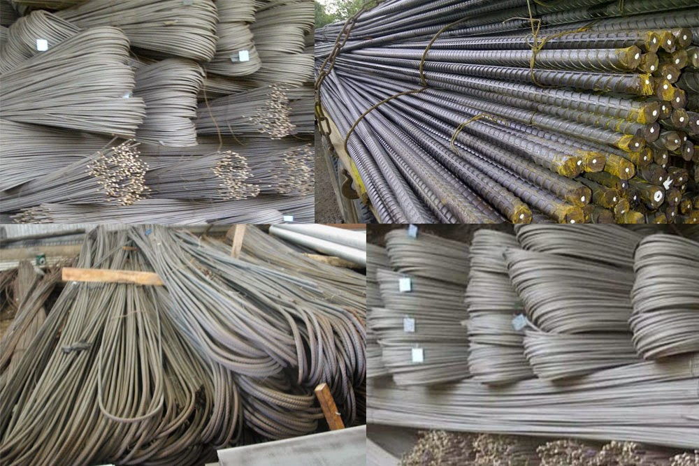

Jual Floor Deck Harga Murah di Pematangsiantar ☎ ??? (www.dis.or.id)
Pada kesempatan kali ini, kami berkesempatan untuk membahas beberapa produk tentang atap. Tergantung setiap kebutuhannya, bagi bangunan yang megah mungkin beton akan menjadi pilihan. Layaknya projek pembangunan yang magak di tengah jalan karena tidak mempunyai atap yang bisa dipakai di atasnya. Oleh karena itulah kita pastinya membutuhkan atap di setiap pembangunan. Pada kesempatan kali ini saya akan membahas beberapa jenis atap, seperti atap galvalum, atap lengkung, seng gelombang, plat seng & plat galvalum dan masih banyak lagi. Maka simaklah artikel yang akan saya ulas berikut ini. Maka beberapa penjabaran kami dapat anda simak.
Distributor & Supplier Floor Deck (Bondex)

Floor deck ini adalah material yang bisa difungsikan sebagai media pengganti dari material konvensional yang umumnya berbentuk papan lebar, misalnya saja seperti triplek. Umumnya Floor Deck digunakan sebagai alas pada saat proses pembuatan lantai maupun atap dari dak beton. Panel Floordeck akan membentuk lantai kerja yang aman yang berfungsi untuk pelindung cuaca lantai bawahnya. Bentuk dari Floor Deck ini umumnya bergelombang serta dari segi ukurannya selalu sama, yaitu 5 cm.
Kini anda bisa mendapatkan floor deck Pematangsiantar dengan kualitas dan harga terbaik dengan mengunjungi dis.or.id. Disana anda bisa mendapatkan info lebih lengkap dan detail mengenai harga dan spesifikasi dari floor deck Pematangsiantar.
Info Pemesanan Selengkapnya
Google Maps: https://www.google.com/maps/d/u/0/viewer?mid=1vSGA7eD7ctB-ierGsro9yf6LdDAQHeLS&ll=-6.2537250295094555%2C106.82745&z=15
Note: https://www.facebook.com/notes/distributor-of-industrial-supply/kontraktor-jasa-floor-hardener/1783168878649658/
Event: https://www.facebook.com/events/534395173592364/
Portfolio Produk: https://www.facebook.com/1681607345472479/photos/?tab=album&album_id=1685055588460988
Distributor & Supplier Besi Beton

Besi beton adalah besi yang digunakan untuk penulangan konstruksi beton atau biasa dikenal sebagai fungsi badan bertulang. Ada beberapa jenis material konstruksi yang ditawarkan, seperti besi beton dengan kualitas yang terbaik. Anda bisa mendapatkan jenis beton berkualitas dengan membeli di berbagai tempat namun tak semua tempat memberikan kualitas besi yang terbaik. Maka dari itu anda harus selektif untuk menentukan besi beton mana yang sesuai dengan yang anda inginkan.
Salah satu cara untuk mendapatkannya adalah dengan membeli di dis.or.id. Di sana anda akan mendapatkan berbagai macam jenis serta ukuran dari besi beton dengan harga yang cukup terjangkau dan mutu yang sangat terjamin. Jadi, anda tidak perlu ragu lagi.
Distributor & Supplier Steel Grating

Seiring dengan perkembangan zaman, dunia pembangunan bidang kontruksi juga mengalami perubahan amat drastis. Salah satunya dengan menggunakan grating dalam kombinasi pembangunan. Secara umum, produk ini digunakan dalam kontruksi lantai, kemudian deck, anak tangga pada bangunan pabrik kemudian, tambang minyak dan sejumlah bangunan industri lain nya. Grating ini disusun dari baja berkalit dan dilas di bagian permukaan silangnya. Karena harga murah tidak menjamin adanya kualitas yang terbaik. Grating ini bisa dirangkai plat strip besi baja dan besi ulir yang dilas pada permukaan silangnya sehingga akan membuat bangunan lebih kokoh dan kuat. Bahan dasar yang digunakan untuk membuat Grating ini cukup berkualitas dan tidak diragukan lagi keamanannya.
Kini anda bisa mendapatkan steel dengan mengunjungi dis.or.id. Memesan steel grating di dis.or.id pastinya anda tidak akan merasa rugi.
Distributor & Supplier Pipa (Hitam/Gas, Galvanis)

Manfaat dari pipa hitam galvanis memang banyak sekali untuk kebutuhan konstruksi bangunan. Pipa hitam gas galvanis banyak digunakan untuk keperluan area pertambangan minyak gas, untuk itu banyak juga yang mengira pipa hitam ini adalah pipa gas. Sifatnya yang tahan karat menjadikan pipa ini dapat diaplikasikan disegala perubahan cuaca Indonesia. Ukuran pipa hitam yang terjual adalah ½ inc sampai 40 inc. Hubungi segera kontak yang telah tersedia untuk informasi lebih detail, kami menerima segala kebutuhan besi baja anda kapanpun dan dimanapun.
Distributor & Supplier Kawat Bronjong/Gabion

Kawat bronjong sering dianggap sebagai pencegah erosi. Kawat ini juga ada yang berbahan galvanis. Gunanya agar kawat tidak karat. Hanya saja, karena ini berfungsi untuk mencegah erosi, maka kualitas kawat berbeda dengan kawat yang sering digunakan. Maka dari itu, kekuatannya untuk menahan tebing tinggi yang mungkin bisa longsor tidak perlu dipertanyakan lagi. Kawat bronjong biasa dilapis oleh galvanis yaitu suatu lapisan anti karat agar kawat dapat tahan lama dan tidak gampang berkarat.
Jika anda saat ini sedang membutuhkan kawat bronjong, anda bisa langsunng mengunjungi dis.or.id. Karena disana terdapat kawat bronjong dengan berbagai ukuran dan berbagai jenis.
Distributor & Supplier WF H-beam

Jenis profil baja struktural yang saat ini tengah populer di tengah masyarakat adalah besi WF. Jenis besi ini banyak dimanfaatkan sebagai bahan konstruksi baja. Entah dari sisi kekuatan tekan nya atau tariknya. menggunakan besi ini tidak perlu khawatir keberatan karena terbukti ringan dengan komponen yang bagus dan seimbang.
Jika membawanya Anda juga tidak perlu khawatir keberatan karena besi ini lebih ringan dan praktis.
Untuk itu bagi anda yang sedang mencari besi baja dengan kualitas terbaik. Harga yang di patok juga sangat terjangakau, jadi anda tidak perlu mengeluarkan budget terlalu banyak. Pastinya dengan harga yang sangat terjangkau.
Distributor & Supplier Expanded Metal

Expanded metal atau yang biasa dikenal dengan sebutan X.P.M. ini merupakan salah satu produk hasil dari kemajuan teknologi saat ini. Umumnya penggunaan dari Expended Metal ini adalah untuk walkway atau catwalk, anak tangga pada tower serta banyak juga digunakan di dermaga/konstruksi lepas pantai/pertambangan. Selain itu, Expanded Metal ini juga memiliki banyak jenis. Umumnya dipergunakan sebagai partisi pengaman gudang, railing, pelindung mesin, pagar penjara, plafond, dan lain sebagainya.
Jika anda ingin lebih mengetahui keunggulan yang dimiliki oleh expanded metal, anda bisa langsung mengetahuinya dengan mengunjungi dis.or.id. Terdapat berbagai macam ukuran expanded metal dengan banyak keunggulan yang bisa anda rasakan ketika mengaplikasikannya langsung pada bangunan anda.
Distributor & Supplier Plat (Hitam, Kapal, Bordes, Strip)

Berbicara tentang plat besi memang beragam, hal ini di tentukan dari seberapa besar dan tebal plat yang di inginkan. Harga plat besi bordes, strip dan plat besi lainnya sangat terjangkau per meter persegi. Mahalnya harga tergantung dari ketebalan besi, motif, dan campuran bahan yang digunakan. Plat besi bordes ini saat ini lebih banyak digunakan sebagai bahan pembuatan mobil, terutama mobil pengangkut seperti truk, pick up, dan lain sebagai nya.
Oleh Karena itu dis.or.id dapat menjual plat besi yang murah dengan kualitas yang bagus. Dengan mengunjungi situs tersebut, anda bisa mengetahui secara detail segala jenis plat yang mungkin sedang anda butuhkan. Tak perlu lagi bingung mencari plat hitam yang murah dan berkualitas.
Distributor & Supplier Atap Galvalum

Seng galvalum adalah bahan seng dengan berbagai kelebihan yang memiliki komposisi tertentu.
Akan tetapi kelebihan kayu bila dibandingkan dengan atap galvalum adalah kayu memiliki nilai yang lebih tinggi daripada galvalum. Anda pastinya sudah banyak melihat rumah menggunakan atap jenis ini.
Ada anggapan bahwa atap galvalum membuat suasana menjadi panas dan bersik. Namun, banyak anggapan yang mengatakan bahwa memasang galvalum akan membuat rumah akan terasa panas dan berisik. Anggapan ini sangat keliru, karena galvalum bukanlah atap seng pada umumnya. Disini kami menyediakan galvalum yang tentunya sesuai kebutuhan dan dengan harga yang sangat kompromi khusus untuk anda yang membutuhkannya. Atap galvalum mempunyai banyak tipe, jenis dan ukuran yang sesuai dengan ukuran yang dapat anda pilih. Perbedaan ukurannya terletak pada panjang, lebar dan tebalnya.
Distributor & Supplier Atap Lengkung

Salah satu bagian penting pada bangunan baik untuk rumah, kantor maupun toko adalah atap. Baik atap tersebut terbuat dari besi, aluminium, galvalum, zincalum kayu dsb. Tidak hanya itu saja kegunaan atap lengkung.
Atap lengkung terbuat dari bahan galvalum dan zincalum yang sudah terkomposisi dengan sempuran. Salah satu jenisnya adalah atap lengkung. Jarang sekali kami melihat bahwa atap galvalum lengkung ini dapat jatuh karena tiupan angin kencang.
Penggunaan atap lengkung contohnya adalah pada pembuatan atap stadion. Ya, apalagi jika bukan atap lengkung. Nah, atap lengkung inilah yang berjasa membuat stadion tersebut terlihat megah. Bila anda tertarik untuk mempunyai atap lengkung pada bangunan anda maka janganlah ragu. Atap lengkung yang anda cari tentunya adalah atap dengan kualitas tinggi dengan harga terjangaku. Maka anda sudah berada di tempat yang tepat. Kami merekomendasikan dis.or.id sebagai tempat untuk anda bisa mendapatkannya.
Distributor & Supplier Truss Canal C
Sebagai informasi untuk anda, bahwa besi kanal C ini di kalangan para pekerja bangunan juga kenal dengan nama Besi CNP. Jadi, galvalum adalah salah satu jenis baja terbaik dimana memiliki cirikas ringan dan tipis namun memiliki daya tahan, dan kekuatan yang sangat baik bahkan di klaim lebih baik bila kita bandingkan dengan baja konvesional. Sehingga akan awet bahkan dengan karat sekalipun. Sehingga gabungan keduanya menghasilkan kualitas yang bila ditandingkan dengan bahan gabungan lain maka tidak akan kalah berkualitasnya. Besi kanal C bisa menjadi pilihan yang tepat bila anda ingin membangun rumah minimalis dengan desain modern. Jangan merapatkan jarak dan ukuran antara reng jika anda ingin lebih kuat dan stabil karen ajika hal itu dilakukan maka anda akan menghabiskan banyak biaya untuk membeli reng galvalume. Namun karena semakin susahnya mendapatkan raw materialnya, dan harga yang semakin ahal maka pemilihan besi kanal C menggantikan fungsi kayu dinilai adalah langkah yang tepat. Oleh karena itu, jangan ragu lagi atas kegunaan besi yang satu ini.
Distributor & Supplier Hollow Galvalum

Apakah anda sedang membutuhkan atau mencari informasi seputar hollow galvalum? Penasaran dengan fungsinya? Harganya? Atau keterangan keterangan lainnya. Kayu pun sudah digeser, dikarenakan keberadaan hollow galvalum ini. Namun dominasi bahan sebagian besar menggunakan alumunium dengan presetase rata rata 55%.
Bila anda ingin membeli Hollow galvalum dengan harga terjangkau dan tentunya kualitas terjamin, simak ulasan kami ini. Rumah rumah masa kini, sudah banyak yang menggunakan rangka jenis hollow untuk pembuatan plafonnya. Jika anda berencana membangun sebuah plafon, saran saya pilihlah ukuran yang saya sebutkan diatas. Tunggu apa lagi, silahkan hubungi customer service kami untuk melakukan pemesanan hollow galvalume. Disana sudah banyak info mengenai hollow galvalum, dari mulai ukuran, harga, berat dsb.
Distributor & Supplier Seng Gelombang

Seng gelombang dijual dengan harga yang relatif murah dibanding genteng, hal inilah yang menjadi daya tarik besar penggunaannya. Baik itu bangunan besar dan kecil, tanpa atap yang berkualitas maka bangunan tersebut rentan kebocoran. Seng gelombang sekarang ini diburu banyak masyarakat untuk menutup bagian atap bangunan mereka. Saking pentingnya, pasti dimana ada bangunan maka disitu ada atap yang menaunginya.
Dengan seng gelombang kecil, anda tak perlu lagi repot memotong ukuran asli seng gelombang dan menata seng gelombang dengan ukuran yang pas pada atap bangunan. Jika anda membutuhkan seng gelombang kecil ini sekarang juga, maka segera hubungi kami di dis.or.id untuk kepentingan lebih lanjut. Seng gelombang dengan warna ataupun transparan amatlah awet bila dibandingkan dengan bahan pembuat atap lainnya.
Distributor & Supplier Plat Seng

Membeli plat galvanis memang bisa dilakukan dengan cara lembaran atau per meter. Anda dapat memilih lebaran atau per meter sesuai dengan fungsinya.
Hal ini tidak lain dikarenakan plat galvanis lembaran memiliki ukuran yang lebih luas dan bermeter meter. Hal hal tersebut memang menjadi ciri khas dari seng biasa pada umumnya. Plat gavalum sendiri sering dinilai sebagai pengganti seng biasa terbaik, plat jenis ini sudah banyak digunakan untuk talang, pabrik, rumah, ataupun kebutuhan outdoor lainnnya.
Apakah anda sedang mencari plat seng & plat galvalum? Anda berada di tempat yang tepat, silakan kunjungi situs dis.or.id untuk info lebih lanjut.
Distributor & Supplier Genteng Metal

Penggunaan genteng metal memiliki kelebihan seperti tidak adanya biaya perawatan karena genteng tidak akan berkarat, jamur ataupun pecah. Kami siap melayani pembelian dalam jumlah kecil ataupaun partai besar untuk tiap tiap brand tersebut. Memang saran terbaik ketika anda ingin menggunakan atap dari genteng metal adalah gunakan jenis genteng metal pasir terbaik. Dengan berbagai keunggulan yang sudah saya jabarkan diatas, maka apalagi yang anda tunggu untuk mendapatkannya? Segera dapatkan genteng metal tersebut di official situs kami di dis.or.id dan dapatkan penawaran menarik. Apakah anda sedang mencari genteng metal berkualitas? Maka anda berada di tempat yang tepat, silakan kunjungi dis.or.id dan dapatkan info menarik khusus untuk anda yang ingin segera mengetahui keunggulan genteng metal ini.
Apakah anda mencari genteng metal? Silakan kunjungi official site dis.or.id dan temukan info menarik untuk anda. kami berusaha mencari kepuasan pelanggan kami.
Distributor & Supplier Besi Wiremesh
.jpg)
Wiremesh merupakan besi lonjor panjang yang disusun seperti anyaman sehingga membentuk lembaran. Struktur dari besi anyam sendiri ada yang membentuk kotak dan jajar genjang, anda bisa memesan kebutuhan wiremesh ini sesuai kebutuhan. Besi wiremesh bisa anda manfaatkan untuk berbagai kebutuhan, misalnya saja untuk kebutuhan konstruksi penguat dak beton, plat lantai, dan juga anak tangga. Tentu saja, tidak semua kebutuhan besi wiremesh bisa menggunakan jenis yang sama. Pada umumnya, kebutuhan besi wiremesh ditentukan oleh tingkat bangunan, bangunan yang bertingkat menggunakan wiremesh dengan ketebalan 8 – 10. Sedangkan wiremesh ukuran 4 sampai 6 untuk kebutuhan bangunan biasa. Besi wiremesh dengan kualitas bagus biasanya akan diproses dengan sistem las otomatis, sehingga susunan kawatnya rapi dan jaraknya teratur. Untuk informasi lebih detail, anda dapat menghubungi kontak yang telah tersedia.
Distributor & Supplier Pagar BRC

Pagar BRC dibuat dari besi beton berukuran diameter 5 mm – 8 mm sehingga tergolong kuat sebagai pagar pengaman. besi-besi berdiameter diatas digabungkan dengan bantuan mesin las wiremesh sehingga tersusun menjadi satu bagian rapi. Pagar BRC termasuk pada kategori pagar minimalis yang siap pakai. Pagar BRC juga tahan karat karena lapisan besi telah terlindungi dengan galvanis. Jika Anda membutuhkan pagar BRC ini segera kunjungi situs resmi kami untuk informasi lebih detail.
Distributor & Supplier Kawat Loket, Kawat Harmonika

Kawat loket harmonika sering sekali diaplikasikan pada kebutuhan kawat pagar dan penutup jendela, hal ini tentu tidak tidak lain karena struktur bentuk dari kawat loket harmonika sendiri mirip seperti anyaman yang kuat. Dengan bentuknya seperti anyaman yang kokoh, anda dapat memanfaatkan kawat loket harmonika untuk berbagai keperluan. Kawat loket harmonika juga tahan karat, maka tak mengejutkan bila ia tahan dalam waktu yang lama. Anda dapat memesan kawat loket harmonika yang terlapis dengan galvanis untuk kualitas terbaik yang tahan korosi. kami dapat memenuhi kebutuhan kawat loket harmonika anda dengan beragam ukuran, maksimal ukuran yang diterima adalah 3 meter.
Distributor & Supplier CNP & UNP

Besi yang sering diaplikasikan untuk keperluan sambungan dan dudukan atap adalah besi kanal UNP, bentuk besi ini melengkung dan membentuk huruf U. Spesifikasi dari besi UNP sendiri sebenarnya hampir sama dengan besi WF, hanya saja besi UNP lebih mudah melengkung untuk itu sangat jarang pengaplikasiannya pada kolom bangunan. Jika besi UNP memiliki bentuk melengkung membentuk huruf U, besi CNP memiliki bentuk melengkung membentuk huruf C. Besi CNP dan UNP ini sangat fleksibel, ia bahkan dapat dimodifikasi dengan plat koil yang menggunakan sistem cutting, sehingga tak heran bila banyak orang memesan jenis besi ini. Anda bahkan bisa menggunakan besi CNP untuk memenuhi keperluan industri dalam bidang otomotif.
Distributor & Supplier Besi Siku

Setiap konstruksi bangunan tentu tidak akan luput dari kebutuhannya terhadap besi siku. Besi siku menjadi salah satu material yang dapat diandalkan sebagai besi penyangga. Pada umumnya besi siku yang banyak digunakan dalam kehidupan sehari-hari adalah besi siku sama sisi, dimana ia membentuk dua garis tegak lurus yang membentuk 90 derajat. Besi siku dibuat dengan ukuran maksimal 6 meter dan dapat menyesuaikan panjang sisi dan ketebalan tiap sisinya. Anda dapat mengunjungi situs resmi kami untuk info pemesanan besi siku selengkapnya! Telah tersedia besi siku dengan berbagai ukuran yang bisa anda pesan. Hubungi saja kontak yang telah tersedia untuk mengetahui informasi pemesanan lebih detail.
Distributor & Supplier Hollow (Hitam, Galvanil, Galvanis)

Sekarang ini besi hollow pemanfaatannya sudah melebihi kayu, meskipun terbuat dari besi kualitasnya pun tidak dapat diragukan lagi.Sekarang sudah banyak orang yang beralih pemanfaatan dari kayu menjadi menggunakan besi hollow.Banyak orang yang mulai beralih dari pemanfaatannya yang menggunakan kayu beralih pada hollow hitam galvanil.Besi hollow saat ini menjadi material pengganti kayu yang sangat baik. Jika saat ini anda membutuhkan besi hollow, anda dapat menghubungi kontak yang telah tersedia atau kunjungi saja website resmi kami di dis.or.id. Kami telah menyediakan besi hollow hitam galvanil galvanis yang bisa anda pesan langsung. Apabila anda membutuhkan material hollow hitam, kami dapat melayani kebutuhan anda tersebut dengan berbagai spesifikasi ukuran. Kami pun merupakan distributor relasi dari dis.or.id yang menawarkan produk hollow hitam galvanil galvanis dengan kualitas terbaik dan harga yang murah. Terdapat besi hollow dengan berbagai ukuran yang bisa anda pesan langsung, misalnya: ukuran besi hollow 40 x 40 x 2 mm x 6 Meter, 50 x 50 x 3 mm x 6 meter hingga ukuran 150 x 150 x 5 mm x 6 meter.Segera hubungi kontak kami untuk info lebih lanjut. anda dapat memesan besi hollow hitam galvanil galvanis tersebut dengan berbagai ukuran, baik ukuran besi hollow 40 x 40 x 2 mm x 6 Meter, 50 x 50 x 3 mm x 6 meter sampai dengan ukuran 150 x 150 x 5 mm x 6 meter. Kami menyediakan besi hollow hitam dengan ukuran 40, 50, 150 dan lain sebagainya dengan panjang rata-rata 6 meter. Untuk anda yang membutuhkan besi ini, kami menyediakan ukuran besi hollow yang variatif 40 x 40 x 2 mm x 6 Meter, 50 x 50 x 3 mm x 6 meterr sampai dengan ukuran 150 x 150 x 5 mm x 6 meter. Besi hollow bisa dimanfaatkan untuk berbagai keperluan, misalnya seperti pagar, pintu besi, teralis, dan masih banyak lagi.
Distributor & Supplier Pipa Pancang

Terutama bagi proyek berjalan yang sedang melakukan pembangunan di atas permukaan laut. Nah, pipa ini sendiri memiliki berbagai ukuran maupun spesifikasi lainnya. Salah satu yang di maksud adalah DIS. Di sini Anda aka mendapatkan pipa dengan kualitas terbaik dan mutu terjamin. Terutama untuk memilih produk DIS. Sedangkan untuk kualitas pipa pun akan sangat terjamin dengan mutu terbaik.
Jasa Pondasi Bor (Strouss/Borepile)

Ketika melakukan proyek pembangunan rumah sendiri, kualitas yang baik hingga dalam hal pengeboran pondasi pun akan menjadi hal yang di harapkan. terkait dengan hal itu, Anda bisa menggunakan jasa pondasi bor sebagai jalan keluar sehingga pada proyek akan menghasilkan pengeboran yang sempurna. Bahkan di Indonesia ini pun juga telah tersebar di mana-mana. untuk masalah kualitas pun tidak perlu di pertanyakan lagi karena hasilnya akan sangat terjamin mengingat pelakunya adalah mereka yang sdah berpengalaman dan merupakan jasa profesional. Hanya saja selama proses pengeboran akan muncul suara bising meskipun tidak di sertai getaran. Dalam prosesnya, pengeboran ini akan menimbulkan suara bising karena mesinnya yang sedang bekerja. Yakni pengeboran manual atau yang otomatis dengan menggunakan mesin.
Distributor & Supplier Genset (New/Second)

Untuk keduanya pun bisa Anda beli di DIS.
Kalau masalah harga, memang genset cukup mahal sehingga banyak yang memilih untuk membeli yang bekas. Akan tetapi, meski bekas, jangan khawatir karena kualitasnya masih cukup baik dan hampir menyamai genset yang baru.
Distributor & Supplier UPS

Untuk alat elektronik yang satu ini, biasanya memang belum cukup terkenal kecuali untuk dunia elektro. Sedangkan UPS sendiri merupakan sebuah alat elektronik yang mampu akan menjadi sumber listrik pengganti sementara jika sumber utamanya terputus. apalagi bagi pengguna komputer. Untuk jenis-jenisnya, UPS terdiri dari beberapa variasi. Karenanya, ketika Anda membeli UPS ini, sebaiknya memastikan terlebih dahulu seberapa besar kapasitas yang Anda butuhkan. Sedangkan untuk memiliki UPS berkualitas, Anda bisa merujuk pada DIS.
Distributor & Supplier Forklift (Second)

Termasuk untuk forklif yang dalam kondisi bekas. Jika tidak ingin yang baru pun Anda bisa memilih forklif yang di jual bekas. Sedangkan untuk penjualannya di sini, tidka perlu di pertanyakan lagi karena kualitas yang di tawarkan adalah kualitas tinggi. Nah, dengan kualitas yang bagus ini, maka forklif akan membuat aktivitas industri Anda menjadi lebih mudah dalam berbagai hal. Penjualan tersebut bisa di lakukan dengan mudah dengan langsung merujuk pada distributor forklif. Sedangkan yang lebih menguntungkan lagi darinya adalah, ketika Anda sudah tidak memerlukannya, maka bisa di jal kembali pada distributor forklif.
Jasa Pembuatan Moulding Inject

Bagi Anda yang sedang bingung membuat moulding inject, jangan khawatir karena disini pun tersedia penawaran jasa untuk membuatnya. Selain itu berapa pun kebtuhan Anda, pasti bisa di layani. Anda tidak perlu khawatir terkait hal itu karena moulding inject yang di hasilkan pun juga merupakan kualitas yang terbaik. Jadi tinggal menyesuaikan saja dengan kebutuhan Anda sehingga pembuatannya bisa benar-benar pas.
Jasa Pembuatan Sparepart Mesin Produksi / Alat Berat

Apalagi mengingat bahwa sparepart ini sangat penting sehingga pembuatannya pun memerlukan perhatian yang tinggi. Oleh karena itu, silahkan menggunakan jasa terpercaya yang di sediakan di sini sehingga akan memiliki hasil yang terjamin. Dalam pembuatannya, alat berat memang tidak bole sampai sembarangan apalagi teledor. Karena itulah di perlukan pembuatan yang tepat sehingga hasilnya sempurna dan bisa bekerja secara maksimal. Hal inilah yang membuatnya harus di produksi oleh jasa terpercaya sehingga akan semakin aman. Perbedaan harga tersebut bisa berdasarkan pada jenisnya yang berbeda maupun ukurannya. Jadi berapa harga dalam pembuatan setiap satuannya tergantung pada bagaimana spesifikasi yang di miliki.
Jasa Service Elektronik (Kompor Gas, Dispenser, Mesin Cuci)

Jadi ketika terasa ada yang salah dengan barang-barang elektronik Anda, jangan khawatir karena di sini Anda bisa memperbaiki dan mendapatkan hasilnya seperti sedia kala. sedangkan beberapa jasa ini melayani service seperti kompor gas, dispenser maupun mesin cuci. Kalau berbicara masalah kualitas, jangan khawatir karena DIS menyediakan service handal yang akan melakukan perbaikan sempurna. Selanjutnya, untuk masalah kualitas, tidak perlu di pertanyakan lagi karena DIS akan memberikan jasa yang memiliki perhitungan tingkat perbaikan dan keamanan yang tinggi. Sedangkan service elektronik ini sendiri, sebenarnya tidak harus saat barang Anda rusak saja.
Nah, apakah anda sudah mengerti betapa pentingnya atap untuk keperluan setiap pembangunan? Tentu sangat penting bukan? Atap sangat dibutuhkan dalam setiap pembangunan sehingga membuatnya sering dicari. Dari yang modern sampai konvensional atap selalu ada di setiap bangunan. Ada pula bangunan yang tak beratap dan hanya menjadi pondasi. Karena tujuan utama dari rumah adalah menaungi pengguna yang ada di dalamnya. Karena rumah paling kecil sekalipun pasti mempunyai atap di atasnya. Karena sebuah rumah tidak dapat disebut rumah tanpa atap diatasnya. Jangan lupa untuk mengujungi official site kami dis.or.id dan dapatkan info & penawaran menarik seputar atap dan masih banyak lagi bahan bangunan yang lain. Kunjungi dis.or.id untuk mendapatkan bantuan, info dan penawaran terbaik khusus untuk anda.